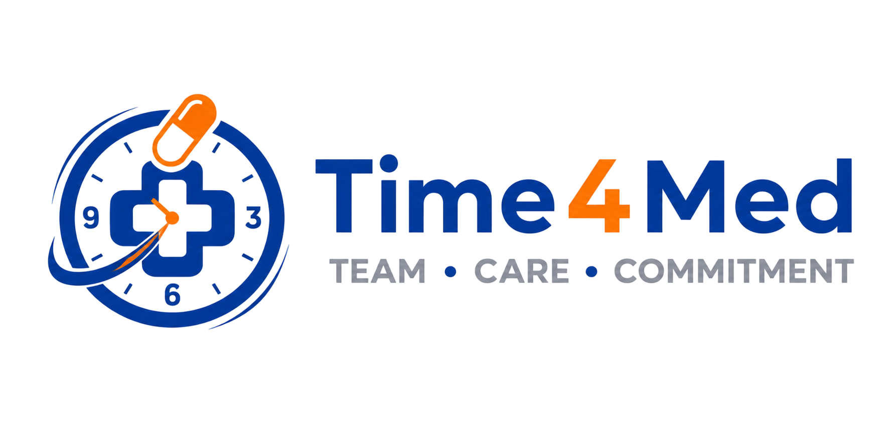

Time4Med
กำลังโหลดระบบเข้าสู่ระบบ...
ออกจากระบบ
TIME4MED / CARE CENTER
ดูแลการรับยาได้ในที่เดียว
--:--
เวลาประเทศไทย
กำลังเชื่อมต่อ Apps Script
ภาพรวมการดูแลวันนี้
กรุณาเข้าสู่ระบบเพื่อดูข้อมูลที่ได้รับสิทธิ์